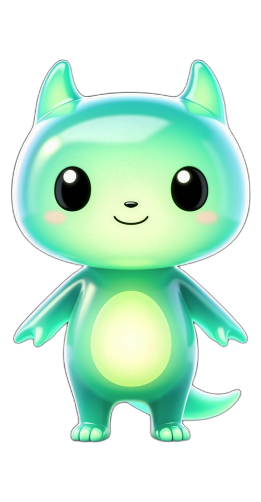

记忆守护兽：打卡泡泡 · 裂变喂养 · 进化解锁技能
两周魔咒：「1 泡泡换 1 食物、喂一次涨一格」如果只是重复动作，节奏固定、反馈可预测、宠物没有脾气，第 14 天就变成每天多按两次的机械负担。下面三处升级专治这个：泡泡有等级（背词的认真程度决定产出）、食物有身份（吃进去的是你今天背的词）、宠物有反应（它会饿、会闹、会因为你回来而进化）。
打卡天数从数字变成宠物的体态、情绪与形态。用户看到的不是进度条，而是自己养出来的东西。这比数字更有黏性，因为它随时可能失去。宠物有四种状态：精神饱满 / 好奇饥饿 / 委屈消沉 / 昏睡。
泡泡不是等价代币：连击产出闪耀泡泡、攻克顽固词产出解毒泡泡、合成盲盒泡泡可能开出稀有食物或装扮。每次打卡的产出不确定，用户会想知道「今天能开出什么」。
进化到高阶后，宠物会解锁真实的学习辅助：必考词标记、写作替换词推荐、发音连读拆解点。让「养宠物」和「背得更快」是同一件事——这也是唯一能让用户长期留下来的理由。

assets/images/pet/，抠图与归一化脚本在 tools/pet_assets/。完成当日背词目标即得；连续打卡每天递增 1 枚，上限 5 枚封顶。断更一天只影响当天倍率，不清零历史累积。
整个学习环节全对、或连续答对达到阈值（建议 5 连对）时额外掉落；闪耀泡泡可直接换稀有食物。
当天攻克了反复答错的高频错词、或清空了错题本里的一批词，额外赠送。奖励「把短板补上」这件最难的事。
断更后补做双倍复习量可得；仅恢复宠物状态，不恢复连续天数。保持公平感，避免「买补签」损伤公信力。
| 泡泡 / 食物 | 怎么得到 | 在体系里的作用 |
|---|---|---|
| 灵光泡泡 | 当日完成背词目标 | 基础产出，裂变为口粮 |
| 闪耀泡泡 | 全对通过 / 连击达标 | 可换稀有食物与装扮 |
| 解毒泡泡 | 攻克顽固错词 | 可换恢复类食品 |
| 盲盒泡泡 | 10 枚普通泡泡在泡泡实验室合成 | 概率掉落稀有食物、成套装扮 |
| 词汇罐头 | 泡泡直接裂变 | 普通口粮，涨饱食度 |
| 四级巧克力 / 六级能量胶 | 盲盒中概率开出 | 额外涨进化值 |
| 雅思马卡龙 / 考研浓缩咖啡 | 盲盒稀有产出 | 高阶进化材料 |
| 记忆软糖 | 打卡后有概率掉落 | 当天复习效率加成 |
学习主流程里泡泡只飘走、不处理；攒下的气泡统一到小窝里的「泡泡实验室」处置，三个按钮解决全部操作：戳破、合成盲盒、直接兑换。节奏可预期，又不无聊。
10 枚普通泡泡合成盲盒泡泡，戳破有概率出稀有食物或装扮；累计 10 次必出一次稀有，并且允许「不要随机、直接兑换指定食物」，把选择权还给用户。
背不下来的难词可生成一张分享卡给朋友或群聊，好友点开帮你打气，双方各得一份双倍泡泡。裂变动作被包装成「帮朋友打气」，而不是发广告。
邀请 1 位好友共养一只守护兽，双方打卡共同喂养、共同进化（避免多人共养造成的责任分散）；未领取的泡泡可在好友间互踩互动，只出不进，不涉及金钱兑换。
当天完成复习 → 精神饱满、吐彩虹泡泡；两天未上线 → 褪色发瘪；连续断更 3 天以上 → 昏睡（唤醒需完成一次复习挑战）。
吃对了会蹦台词：“Yummy! You mastered 20 words today.”；饿了会催：“I'm hungry, let's learn!”。台词按宠物当前词库等级切换，本身就是一次极轻量的语境复习。
学习过程中即时冒泡泡（约 300 毫秒、不阻塞下题）；喂养集中到当日学习结束后的「开饭」一次，不打断答题节奏。
喂养掉落的硬币用于购买壁纸、摆件、宠物配饰；考试季限时主题（四六级冲刺季、考研冬训季），制造短期冲刺理由。
累计投喂量 + 连续打卡推进五个形态：泡芽 → 幼兽 → 灵兽 → 守护兽 → 记忆巨兽。进化方向由主背词库决定：考研/四六级 → 学者系；雅思/托福 → 英伦系；口语/听力 → 环球系；中小学 → 学院系。五阶正面形象见 assets/images/pet/guardian_gel_五阶进化总览.png，逐阶透明底单图在 assets/images/pet/stages/。
学者的洞察：每日标出 10 个必考易错词；英伦的优雅：写作替换词与搭配推荐；环球的口音：连读与弱读拆解点；学院的守护：生词免死金牌（答错不计入今日错误）。
不新增一套设置项，技能随形态自动生效并在小窝里展示。用户看到的是「我的兽能帮我什么」，而不是「我买到了什么功能」。
小窝里的「去乐园走走」入口，不占底栏；学习小组内出现「成员宠物有新动态」的小圆点提示，一天最多提示一次。
只显示与你在同一学习小组的成员宠物，按「今天有动态」优先排列，不做任何排名。默认参展；用户可随时切到「我的宠物不参展」，从小组乐园消失，同时看别人的功能保留。
打气：每日 1 次，被鼓励的人得 1 枚能量泡泡；送小食：从自己泡泡里送 1 枚，双方各得一份好感，每日上限 3 次；摸摸头：留下足迹，宠物回一句短语。
展示：形态、今日努力快照（今天背了多少个词、连续打卡多少天）、心情状态。绝不展示：等级战力值、排行榜、真实姓名、学习数据明细，也不给宠物做「强弱」排序。
动效成本也支持这个选择：毛发在矢量动效里最难做，容易渲染成塑料感；凝胶体的表面形变、弹性缩放、内部发光用 Rive / Lottie 骨骼动画成本最低、最出效果。
已定稿形态：圆头 + 小尖耳 + 凝胶身体 + 鳍状尾巴（定稿 PNG 在
assets/images/pet/guardian_gel_*.png）。这个形态保留了哺乳动物的幼体比例以拿到「三秒亲和力」，同时用半透明凝胶和内部发光核保住「记忆」这个品牌识别，两侧与头顶不带角、不带鳞。中间试错记录：① 第一版做过圆润无耳的果冻团子，被否——不可爱；② 也试过「猫的头部比例 + 凝胶身体」的完整猫形，三视图一致性反而不如本品（猫耳在侧视与背视之间容易漂移）；③ 最终在「圆头尖耳」这一形态上定稿，它同时满足可爱度、识别度与三视图一致性。
允许的成长维度：① 体型等比放大（相对第 2 阶幼兽：泡芽 0.62、幼兽 1.00、灵兽 1.06、守护兽 1.22、记忆巨兽 1.40）；② 耳朵逐阶加长，耳下那一排深青色半透明棱状鳍刺保留并略微增多；③ 头顶记忆泡泡由单个芽点 → 小角冠 → 完整冠冕；④ 皮肤上的深青色斑点保留并逐阶更密；⑤ 身体两侧的翼状小鳍、宽大的鳍状尾巴保留；⑥ 胸前发光核逐阶更亮，最终形态多出一圈发光纹路。
特别记一笔：曾被误判为「跑偏」而砍掉的斑点纹理与耳下棱刺，其实是第 4 阶最好看的部分，已明令禁止再删。真正会断档的是「体型跳档 + 换成另一种生物结构」，不是这些细节。
落地文件：五阶总览
assets/images/pet/guardian_gel_五阶进化总览.png，逐阶透明底单图在 assets/images/pet/stages/；两个被否的旧最终形态留在 assets/images/_unused/ 备查。
宠物直接显示在手机主屏：饥饿状态 + 今日剩余词量。不打开 App 也能看到它在等你，提升每日打开率。
宠物昏睡时，一次小复习即可唤醒，并给一个可观的奖励包——把「流失用户回来」这件事，做成一次有仪式感的救援。
连续 3 天喂养才算进化一档；漏喂只降低当日产出倍率，不扣历史进度。宠物不会因为一次断更永久衰败。
概率只是「惊喜感」：十连必出 + 允许直接兑换指定食物，避免用户刷概率而不是背词。
不写「你的宠物快饿死了」这类负罪文案；宠物允许休眠，回来一次即可唤醒。
「单词泡泡天空」（IDEA #001）是即时反馈，「灵光泡泡」是养成货币。建议在 UI 上把后者统一叫「能量泡泡」并配独立图标，避免用户混淆两套泡泡。
形态与技能线有限且前置门槛低（不作无上限成长）；赛季主题定期重置，给新用户一个「并入当前赛季即可玩」的入口。
乐园只展示「今天有多努力」与形态，不做任何排名、不设战力值、不给宠物排强弱；只对同组成员可见，并允许一键退出参展。
本方案的定位是背词之外的仪式感小窝：即时反馈归「单词泡泡天空」（掌握单词 → 泡泡直接升空），养成仪式归「记忆守护兽」，两者共享同一份背词数据，但当天新增操作次数为零——学习界面里泡泡只负责飘过，喂养统一发生在一天结束后的「开饭」时刻。
建议：暂时不做。付费点只做「加速」不做「解锁」：装扮、赛季皮肤、加速道具。补卡一律用分享或双倍复习换取，绝不出售补签。
建议：统一名称用「记忆守护兽」，个体形态由系统生成、昵称由用户自定义。现有形象库里有泡泡龙、词霸怪、语感狐，若定名需先补进项目术语表再使用。